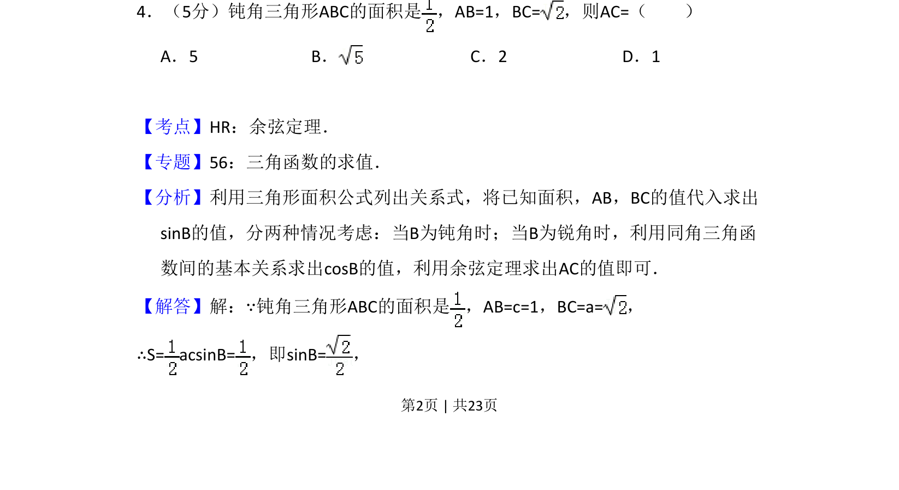
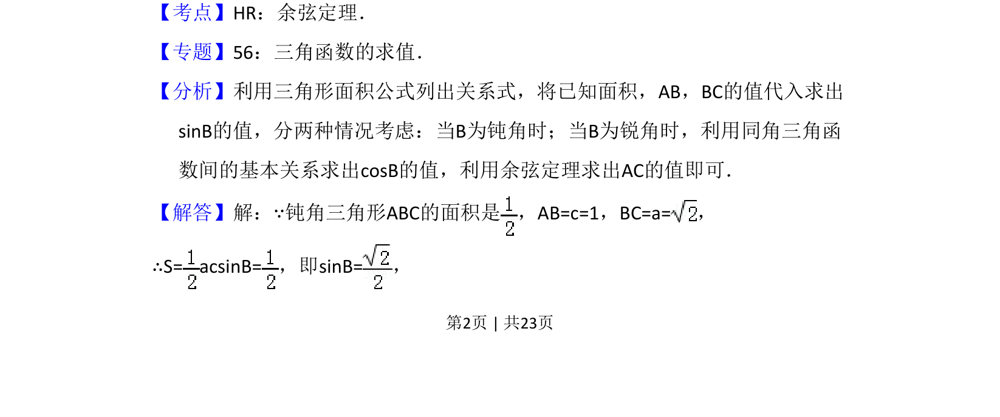
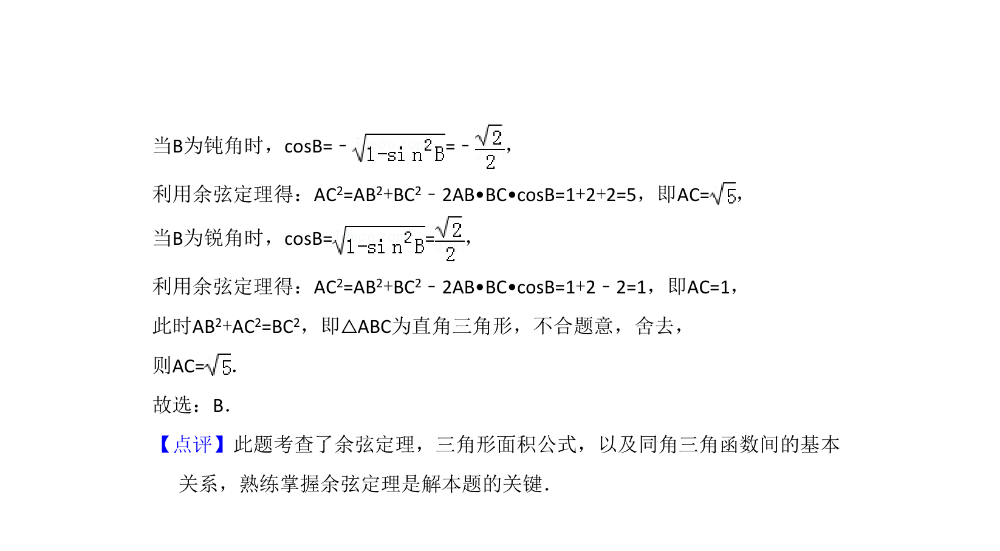

考点：余弦定理 三角形面积 解三角形 分类讨论

已知钝角三角形两边及面积，利用面积公式求夹角正弦，分类讨论并利用余弦定理求第三边。


📄 原 PDF 第 2 页：
素材/真题/吉林/2008-2024·（吉林）数学高考真题/2014年高考数学试卷（理）（新课标Ⅱ）（解析卷）.pdf
4．（5分）钝角三角形ABC的面积是 ，AB=1，BC=，则AC=（ ） A．5 B．C．2 D．1
【考点】HR：余弦定理．菁优网版权所有 【专题】56：三角函数的求值． 【分析】利用三角形面积公式列出关系式，将已知面积，AB，BC的值代入求出 sinB的值，分两种情况考虑：当B为钝角时；当B为锐角时，利用同角三角函 数间的基本关系求出cosB的值，利用余弦定理求出AC的值即可． 【解答】解：∵钝角三角形ABC的面积是 ，AB=c=1，BC=a=， ∴S= acsinB=，即sinB=，